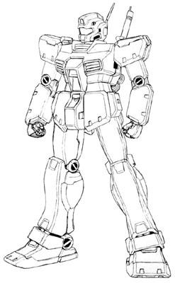

| RGM-79E GM Space Type Limited Production Space Combat Earth Federation Mobile Suit |
|
|  | |
General and Technical Data |
|
|
Model number: RGM-79E Code name: GM Space Type Unit type: limited production space combat mobile suit Operator: Earth Federation Dimensions: head height 18.0 meters Weight: empty 41.2 metric tons; max gross weight 58.8 metric tons Construction: titanium/ceramic alloy Powerplant: Minovsky type ultracompact fusion reactor, output rated at 1250 kW Propulsion: rocket thrusters: 4 x 12500 kg, 4 x 1870 kg Performance: thruster acceleration 0.98 G Equipment and design features: sensors, range 6000 meters Fixed armaments: 2 x 60mm vulcan gun, fire-linked, mounted in head; beam saber, stored in recharge rack in backpack, hand-carried in use Optional hand armaments: 90mm machinegun, clip-fed, 20 rounds per clip; tower shield; 3x grenade Magnetic Storage Racks: 3, primary rack on backpack, one additional rack on either hip. |
|
| Technical and Historical Notes | |
|
Shortly before the first inadvertant deployment of the RX-78 Gundam, the Federation took the preliminary data from the Gundam and used it to produce two new testbed mobile suit series: the RGM-79[G] GM Ground Type, and the RGM-79E GM Space Type. The Ground Type took the principle of land warfare to the fullest, including lunar titanium armor and heavy weapons, and the Space Type took the Federation's knowledge of the Gundam's tactics in space and put it into a standardized package.
The Space Type GM, while not as heavily armed or armored as its land based counterpart, is still a notch above the Zeon's MS-06F Zaku II. Its lighter weight and improved armoring also makes it more maneuverable than competeting mobile suits. However, unlike the GM Ground Type, which is an extremely powerful mobile suit, the Space Type is much more of the testbed it was meant to be. It isn't much better than the mass production RGM-79 GM, and its land combat capability is significantly inferior. Also, it is not armed with the usual GM's bazooka, as the rushed production did not have time to incorporate the bazooka's telemetry and targeting data.
Much as with other GMs, they are not equipped with a reactor powerful enough to equip a full-sized beam rifle, so they must make do with standard ballistics.
|
 RPG quick stats sheet
RPG quick stats sheet | Weapons and Features | |
|
|
|